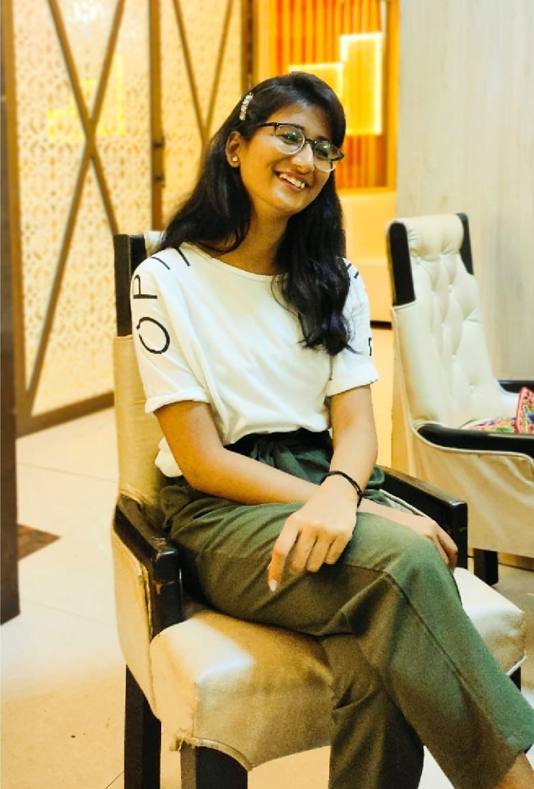

Hey! My name is Manishka Gupta.

Experience And Skills

Web Development Intern:
CodSoft (September 2023- October 2023)
Worked as an intern at ABC Company,
where I gained hands-on experience in
web development.
Contributed to the development of a
portfolio and calculator website showcasing
my skills and personal projects.
Education
| Maulana Azad National Institute of Technology Master in Computer Application , (2023-2026) |
| I am studying Data Structure, Web Development, Operating System and other core subjects. |
| I have a good control over program solving in languages like C , C++, Java. |
| I will be studying Artificial Intelligence, Machine Learning, Deep Learning within my course curriculum |
| I have scored rank 308 in the qualifying NIMCET examination |
| Banaras Hindu University Bachelor's in Computer Science, (2020-2023) |
| I have studied Data Structure, Computer Architecture, Operating System , Database Management System during my course curriculum. |
| I have scored rank 8.94 CGPA in my course. |

PROJECTS

Hunting For Exoplanets using Machine Learning
This project aims to explore the use of the K-Nearest Neighbours (KNN) algorithm in detecting exoplanets.
Exoplanet hunting is a challenging task that requires the analysis of large amounts of astronomical data,
which can be time consuming and prone to human error.
Machine learning algorithms, such as KNN, offer a promising approach
to automate this process and identify exoplanets more efficiently and accurately.
Astronomy Website:ECLIPSE
A landing page for an astronomy website is a critical component designed to captivate visitors
and provide a glimpse of the website's offerings.
Here's a brief description of what this landing page for an astronomy website entail:
About Us | Celestial events | Astronomical Artistry | Cosmical Offerings | Contact Us
Calculator: MathMatic
Mathmatic is a user-friendly online calculator website designed to assist users
in performing a wide range of mathematical calculations.
Leveraging the power of HTML, CSS, and JavaScript, Mathmatic offers
an intuitive and responsive platform for mathematical tasks.